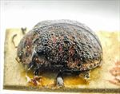
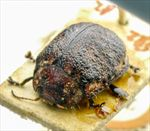
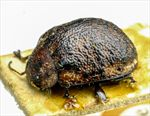
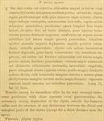

Click on images to enlarge
{kind=link}

Fig. 1. Paropsis mixta type specimen, lateral view
{kind=link}

Fig. 2. Paropsis mixta type specimen, oblique view
{kind=link}

Fig. 3. Paropsis mixta type specimen
{kind=link}

Fig. 4. Paropsis mixta, description
Name
Paropsis mixta Blackburn, 1896
Corresponds to
No known correspondence with any of the species codes.
Diagnosis and Notes
Blackburn (1896) deals with P. mixta as part of his 'subgroup ii' (i.e., those species without "strongly marked characters", whose greatest height is not or scarcely in front of the middle of the elytral margin and whose elytra are depressed under the humeral callus). Within that group, he characterises it as:
A. Inner edge of humeral callus distinctly nearer to lateral margin of elytra than to suture;
B. Sides of prothorax more or less explanate;
C. Elytra not having well-defined continuous costae;
D. Puncturation of the elytra not particularly fine;
E. Upper surface of elytra in general, or at least the verrucae, black or nearly so;
FF. Explanate margins of prothorax much narroer [<1/3 of width of discal part];
G. Median verrucae of prothorax scarcely defined;
HH. Prothorax not coloured as in piceola [not dark in middle, with contrasting pallid sides];
II. elytral verrucae much less distinct, confused (especially in front) with interstitial rugulosity;
J. puncturation of prothorax close and asperate; form strongly convex.
This species likely belongs to the group of species related to Ta23 and Ta21, its verrucae are distributed very like in those species. Blackburn notes that its prothorax is very transverse - almost 3 times as wide as long. If correct, this would certainly be unusual among Trachymela, where that ratio very rarely exceeds 2.75.
Type specimen
Location: BMNH
Label data: /“Type” (red-bordered circle)/ “Blackburn coll. 1910-236.”/ “Paropsis mixta, Blackb.” [specimen is carded, with unreadable number on card with insect]/.
Female; Size: 7.85 (L) x 5.95 (W) x 3.45 (H) mm; A-A: 1.29 mm, HCE/BL~20% (estimate from photo of lateral aspect of type).
Original description
Translation of original description (Figure 4) by ChatGPT, 03/2026:
♀. Rather broadly ovate, rather convex, the greatest height (seen from the side) placed about the middle of the elytra; somewhat shining; black, with the head and prothorax reddish, more or less marked with black; elytra variegated with black and reddish; base of the antennae reddish; head rather closely and somewhat roughly punctulate. Prothorax nearly three times as broad as long, dilated from the apex almost to the base, near the apex transversely but only slightly distinctly impressed, rather closely and somewhat roughly, less finely (at the sides more coarsely) punctulate; sides moderately rounded, narrowly flattened, posterior angles rounded; scutellum punctulate. Elytra strongly depressed below the humeral callus, behind the base scarcely distinctly transversely impressed, rather closely and rather strongly somewhat in rows (more so at the sides, less so behind) punctate; furnished with numerous, rather distinct black verrucae, somewhat in rows; interstices rugulose; marginal portion less distinctly separated from the disc (toward the apex a little more so); humeral callus with its inner margin much more distant from the suture than from the lateral margin of the elytra; basal ventral segment sparsely and rather finely punctulate. Length 3⅘ lines [~8 mm]; width 2⅘ lines [~5.9 mm].
References
Blackburn, T. 1896, "Revision of the genus Paropsis. Part I", Proceedings of the Linnean Society of New South Wales, vol. 21, no. 4, 637-693 (page 661).
Copyright © 2026. All rights reserved.